1.1. О терминологии, RFC и
стандарте MIME 1.2.
Кодировки кириллицы 1.3.
Семибитные транспортные кодировки
2. Передача почты и появление
извращенных кодировок
3. Извращения и отдельные
программы
3.1. Pegasus Mail for
Windows 3.2. Netscape
Navigator и Communicator 3.3. MSIE 3, MS Internet Mail &
News 3.4. MSIE 4, Outlook
Express 3.5.
Eudora 3.6. Forte
Agent 3.7. The
Bat! 3.8.
UUPC
4. Способы преодоления
4.1. Какие сообщения следует
посылать во избежание проблем? 4.2. Как раскодировать сообщение из
транспортной кодировки? 4.3. Как прочитать сообщение в
извращенной кодировке?
4.3.1. Программы для DOS и
электронная почта в DOS-кодировке
4.3.1.1. XCODE 4.3.1.2. Патч для WPVIEW
4
4.3.2. Программы и работа под
Windows
4.3.2.1. Pegasus Mail for
Windows 4.3.2.2. Netscape
3 и 4 и MS Mail&News 3 4.3.2.3. Outlook Express 4.3.2.4. Eudora 3 и 4 4.3.2.5. Forte Agent 1.0 -
1.5 4.3.2.6. The
Bat! 4.3.2.7. Agama Mail
Reader 4.3.2.8. Другие
перекодировщики
В своем первоначальном варианте эти заметки были написаны и выпущены в Сеть
почти полтора года назад. Поводом послужили несколько обстоятельств: одним из
них был очередной всплеск дискуссии о "самой лучшей кодировке" и о том, хорошо
или плохо поступают провайдеры, перекодируя почту. Другим - первая удачная
попытка (за трехлетнюю тогда историю моей жизни с e-mail) обмена электронными
письмами по-русски и русскими буквами с живущими за границей друзьями: письмо
было написано в DOS-кодировке и послано как UU-кодированное приложение в Pegasus Mail for Windows; интересно, что
попытка сделать то же самое через программу Eudora к успеху не привела. И, наконец, тогда
же появились новые версии Forte Agent
(одной из лучших программ чтения почты и конференций) с развитой поддержкой MIME, и их
оказалось возможным научить читать сообщения как в различных стандартизованных
кодировках, так и в случае некоторых видов их порчи.
С тех пор проблема отнюдь не "рассосалась", но в достаточной мере очертилась
и канонизировалась, потеряла загадочность, но сохранила глубину. Целый ряд
программ научился довольно гибко обращаться с разными кодировками, так что
необходимые настройки стало возможно осуществлять просто путем простановки
галочек в нужных местах. Однако если что-то не получается, то выяснение причин
по-прежнему остается деятельностью не слишком тривиальной и требующей достаточно
ясного понимания, что именно скрывается за каждой из проставленных (или не
проставленных) галочек.
Как и раньше, остается справедливым (так почему-то и не ставшее общим местом)
следующее предупреждение: посылая куда-либо электронное письмо (в том числе
сообщение в электронную конференцию), вы можете быть уверены с почти
стопроцентной вероятностью, что оно дойдет до адресата в неизменном виде, только
в том случае, если письмо является текстом, содержащим исключительно цифры,
знаки препинания и буквы (большие и маленькие) английского языка. (В
стародавние времена могли быть проблемы и с маленькими английскими
буквами, но эти времена давно прошли.)
Тексты же на других языках, особенно с полностью неанглийским алфавитом,
таким как русский (или греческий, или еврейский), всегда, с большей или меньшей
вероятностью, могут дойти до адресата в испорченном или нечитаемом виде,
независимо от кодировки и прочего, не всегда спасет даже передача их как
двоичных файлов, закодированных программой UUENCODE
или аналогичной. Тем не менее можно минимизировать вероятность такой порчи, а в
большинстве случаев - прочесть испорченное письмо. Пользуясь фрейдистским
языком, можно сказать, что разрешить проблему оказалось невозможно (быть
может, и ненужно), но ее удалось в значительной мере снять.
Помимо неразберихи с разными способами передачи электронных писем, изрядная
неразбериха (и синонимия) наблюдается и в соответствующей терминологии, как
русской, так и английской. То, что можно считать стандартами Интернет,
зафиксировано в документах, обозначаемых RFC (это не слишком понятно
расшифровывается как Request for Comments, но в действительности означает что-то
вроде инвентарного номера для каждого из документов, см. http://info.internet.isi.edu/in-notes/rfc/
или http://www.kiarchive.ru/pub/internet/rfc/).
Степень стандартности тоже может быть разной - от общепринятых и обязательных
технических спецификаций до аккуратно (всё-таки) сформулированных предложений
группы разработчиков.
Так вот, изначальный стандарт на электронное сообщение (RFC822, 1991 г.)
разрешал исключительно 7-битные символы в сообщении, т.е. кодировку ASCII
(American Standard Code for Information Interchange - американский КОИ, попросту
говоря, см. рис. 1).
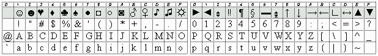
Рис. 1. ASCII (коды 0-127; символы с кодами от 0 до 31
существуют только в некоторых расширенных кодовых таблицах)
(charset=us-ascii)
Через некоторое время появился и устоялся стандарт
MIME (Multipurpose Internet Mail Extensions, RFC1341, 1992
г., затем RFC1521, 1993
г., последняя редакция - RFC2045 - RFC2049, 1996
г.), определяющий способы передачи через Интернет любых сообщений. И хотя
терминология там отнюдь не самоочевидна (английские выражения "character set" и
"encoding" сами по себе не менее многозначны и не более конкретны, чем русское
"кодировка"), сами сущности формализованы довольно четко и дают хорошую основу
для конкретных обсуждений, не связанных даже с MIME непосредственно.
В соответствии с этим мы различаем, что мы
передаем в электронном письме - какого типа его содержание, и как мы это передаем - как это содержание кодируется.
Что - это, в первую очередь, текст или двоичный
файл, еще один вариант - многосекционное сообщение, каждая из секций которого
тоже относится к одному из типов. Основное отличие - тексты, в общем и целом,
предназначены для чтения человеком, независимо от используемого
программного обеспечения, главное здесь - их читаемость. Двоичные файлы
предназначены для передачи понимающей их программе или сами являющиеся
программой, и главное здесь - передать их в неизменном виде. Разумеется, могут
быть пограничные случаи, различие типов не абсолютное, но тем не менее
классическая телеграмма "Шлите апельсины бочками. Братья Карамазовы" является
чистым примером чистого текста, а исполняемый модуль программы, зараженный
вирусом, - чистым примером передачи двоичного файла. И если двоичный файл
самодостаточен, то текст, превращенный в последовательность байтов, неотделим от
своей кодовой таблицы, или (языковой) кодировки.
Как - способ дополнительно закодировать
превращенное в последовательность байтов содержание, чтобы его можно было
передать по электронной сети, что может быть необходимо даже для текста и
практически всегда необходимо для двоичных файлов, которые вполне могут
содержать не только символы, не входящие в ASCII, но и управляющие коды (от 0 до
31), типа "возврата каретки" или "перевода строки". Этот способ тоже может быть
назван кодировкой, но, в отличие от предыдущего абзаца, - транспортной
кодировкой.
В спецификации MIME описывается, как в заголовке сообщения передать
информацию о кодировке самого сообщения (его тела). Для этого
используются три строчки заголовка примерно следующего вида:
Полуизвиняясь за возможный разнобой в употреблении больших и маленьких букв,
отмечу, что RFC на равных правах допускают и то, и другое, и произвольную смесь
регистра букв.
Здесь Content-Type описывает, что передается - text/plain
(чистый текст, для письма в HTML будет стоять text/html), определено
также несколько мультимедийных типов, charset (от character set) -
указатель на языковую кодировку, а "KOI8-R" - стандартизованное
обозначение кодировки. В RFC2046
приводятся обозначения кодировок US-ASCII и наборы ISO-8859-1 -
ISO-8859-9. Другие обозначения кодировок и новые типы должны быть
зарегистрированы в IANA (Internet Assigned
Number Autority), список всевозможных зарегистрированных обозначений на октябрь
1994 г. содержится в RFC1700, а
последний список зарегистрированных charset's находится по адресу ftp://ftp.isi.edu/in-notes/iana/assignments/character-sets.
Content-Transfer-Encoding содержит обозначение транспортной
кодировки:
8bit означает, что никакого дополнительного кодирования не производится,
Base64 - перекодировка в 7-битный, но нечитаемый код, часто в
описаниях называемая просто кодировкой MIME,
Quoted-Printable - перекодировка 8-битных символов (не трогающая
большинство 7-битных) в выражения типа =С1, где С1 - шестнадцатеричный
код символа. При таком способе чисто английские тексты или английские вкрапления
остаются в читаемом виде.
Есть еще несколько обозначений, но популярный в ФИДО и едва ли не наиболее известный,
аналогичный Base64 способ кодирования двоичных файлов - UUENCODE -
не попал в стандарт, хотя для него иногда применяется пользовательское
("иксовое") обозначение X-UUENCODE.
В многосекционных сообщениях (например, с приложенными файлами - attachments)
тип сообщения обозначается примерно таким образом:
Каждая из секций сообщения (разделенных строчками boundary) содержит
при этом свои строчки с Content-Type и Content-Transfer-Encoding.
Описанная схема, стандартизуя способы передачи национальных символов и
двоичных файлов в теле письма, не затрагивает их заголовков, где тоже могут быть
национальные символы - в поле Subject (тема) или в полях From,
To (в пояснениях к адресам). Эта проблема решается в RFC2047, где
требуется кодировать 8-битные заголовки и вставлять в них "микрообозначения"
кодировки - "Q" для Quoted-Printable и "B" для
Base64 примерно следующим образом:
Нельзя не отметить, что и тот, и другой вариант выглядят равно нечитаемыми, и
что вообще требования MIME к передаче национальных - в частности русских -
символов в электронных сообщениях не очень сочетаются с идеей "чтобы все было
попросту и читалось глазами".
И последнее замечание "для полноты": о применении HTML в почте. Этот формат
оказывается более сложным за счет возможности включения в сообщение картинок и
других ссылочных объектов, что укладывается в многосекционную схему MIME, но
способы организации ссылок внутри одного сообщения в MIME не конкретизируются.
На этот счет существует сравнительно новый RFC2110 "MIME
E-mail Encapsulation of Aggregate Documents, such as HTML (MHTML)" (март 1997
г.) и ряд других уточняющих документов (RFC2387, RFC2392), но все
это уже выходит за пределы темы почтовых кодировок, в которую HTML никакой
новизны не вносит.
В те времена, когда я еще умел программировать на ассемблере, это был
ассемблер вычислительной машины СМ-4, советского, так сказать, аналога
американской машины PDP 11/70. Но русская кодировка там уже была, она была
семибитной, русские буквы (только заглавные) располагались на месте похожих по
произношению малых английских, а называлась она КОИ-7, т.е. Код Обмена
Информацией семибитный (см. рис. 2).
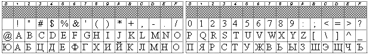
Рис. 2. КОИ-7 (коды 0-127).
Впрочем, некоторые
принтеры (тогда это слово как раз начало входить в обиход) могли поддерживать и
КОИ-8, где таблица ASCII сохранялась в натуральном виде, а русские буквы
(большие и малые) были перенесены в старшую часть кодовой таблицы. Дальше пошли
в наступление персональные компьютеры IBM PC, и число русских кодировок в
конечном счете превысило все разумные пределы. Вот некоторые наиболее
распространенные, на рисунках показана только старшая часть таблицы:
Русская кодировка для MS DOS, она же CP866
(от CodePage - кодовая страница), она же "альтернативная кодировка ВЦ Академии
Наук СССР" (рис. 3). Содержит псевдографику (позволяющую в текстовом режиме
рисовать рамки из одинарных и двойных линий). Является стандартной в
русскоязычной части сети ФИДОНЕТ. Существует несколько модификаций,
отличающихся символами в последних 14 позициях. Зарегистрирована в IANA как
IBM866 или CP866.
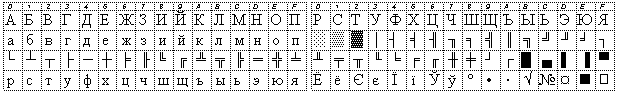
Рис. 3. DOS Cyrillic (charset=IBM866).
KOI8-R - наследница КОИ-7 и КОИ-8, полученная во времена начального
развития русской электронной почты путем "гибридизации" КОИ-8 с псевдографикой
DOS и принятая как стандарт русской кодировки для UNIX-систем (рис. 4). Ее
замечательное свойство - наличие стандартизованной взаимно-однозначной
перекодировки с одной из модификаций DOS-кодировки. Обладает некоторой
устойчивостью к "обрезанию" старшего бита: большинство русских букв при этом
переходит в близкие по звучанию английские. Описана в RFC1489 (1993
г.), зарегистрирована в IANA как KOI8-R. Каноническая www-страничка -
http://www.nagual.pp.ru/~ache/koi8.html.
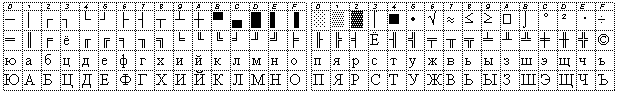
Рис. 4. KOI8-R (charset=KOI8-R).
Стандартизован и недавно зарегистрирован украинский клон КОИ-8 -
KOI8-U (рис. 5, описан в RFC2319,
апрель 1998 г.), к сожалению, не соответствующий стандартной перекодировке
KOI8-R - DOS.
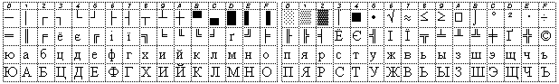
Рис. 5. KOI8-U (charset=KOI8-U).
Кириллица Windows, она же CP1251.
Содержит (помимо русских) буквы большинства современных славянских языков и
ряд стандартных для MS Windows символов и различных кавычек. Взаимно
однозначная перекодировка в DOS
или KOI8-R
невозможна. В 1996 г. зарегистрирована в IANA как Windows-1251 (рис.
6).
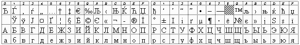
Рис. 6. Windows Cyrillic, CP1251
(charset=Windows-1251).
Кириллица
Macintosh, она же CP10007. Довольно близка к CP1251. Не
зарегистрирована в IANA, но часто обозначается как x-mac-cyrillic (рис.
7).
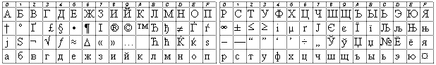
Рис. 7. Macintosh Cyrillic, CP10007
(charset=x-mac-cyrillic).
"Основная кодировка ВЦ Академии Наук СССР", в руководствах к
принтерам обозначаемая просто как "ГОСТ" (и живущая сейчас, похоже, только
внутри принтеров) (рис. 8).
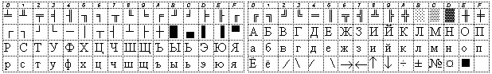
Рис. 8. "Основная" кодировка, "ГОСТ".
ISO
8859-5 - наследница "основной кодировки ВЦ Академии Наук СССР", получившая
статус стандарта ISO. Зарегистрирована в IANA
как ISO-8859-5 (рис. 9).
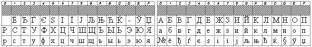
Рис. 9. ISO 8859-5 (charset=ISO-8859-5).
Особняком стоит Unicode -
универсальная двухбайтовая (в отличие от вышеописанных) кодировка, включающая
многие (и стремящаяся охватить все) распространенные алфавиты мира (карту
символов см. на http://charts.unicode.org/Unicode.charts/glyphless/Unicode.html).
Помимо возможного непосредственного использования, она является "языком
описания" различных менее универсальных кодовых страниц. Соответствующие коды
(в шестнадцатеричном виде) принято обозначать как U+NNNN, например,
русской букве "Ж" соответствует U+0416. На рис. 10 показан русский блок
Unicode (U+0400 to U+04FF). В то же время, подобно двоичным файлам, кодировка
Unicode мало подходит для непосредственной передачи по сети - байты в тексте
вполне могут приходиться на область управляющих символов, поэтому обычно
применяются две другие основанные на Unicode кодировки переменной длины,
обозначаемые как UTF (Unicode Transformation Format): 7-битная UTF-7
(последний пересмотр - RFC2152, 1997
г., зарегистрирована в IANA как UTF-7) и 8-битная UTF-8 (RFC2279, 1998
г., зарегистрирована в IANA как UTF-8). Обе они в каком-то смысле уже
не являются языковыми кодировками, а являются своего рода "обертками" для
исходного Unicode (как Base64), но - зарегистрированы они именно как
кодировки, наравне с ISO 8859-5
или KOI8-R.
Естественно, обе они не являются специфически "русскими", а пригодны для
написания "сколько угодно"-язычного письма. Хотя, конечно же, для реализации
этой замечательной возможности одного лишь стандарта кодировки недостаточно.
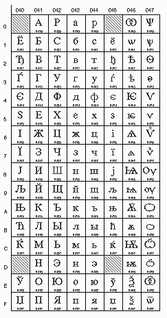
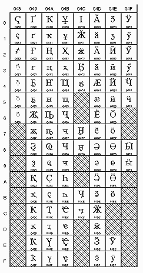
Рис. 10. Кириллица в Unicode (рисунок c сервера
Unicode).
Также особняком, но по-другому, стоит еще одна, причем 7-битная, русская
кодировка - транслитерация, или латиница, когда русские буквы
передаются похожими по звучанию английскими primerno takim obrazom (в
релкомовской терминологии почему-то используется обозначение "волапюк" - по
названию одного из проектов искусственного языка конца XIX века).
Следует отметить еще пару осложняющих обстоятельств. В вышеприведенном списке
неявно предполагается, что младшая часть восьмибитных кодовых таблиц одинакова и
совпадает с ASCII. Однако это не совсем так в области кодов от 0 до 31. В
ASCII там находятся управляющие коды, не имеющие графического образа.
Однако в кодовых таблицах для MS DOS, в том числе, в таблице 866, в эту область
помещаются псевдографические изображения улыбок, карточных мастей и прочего,
которые во многих случаях могут быть отображены на экране. Более того,
большинство управляющих кодов (кроме, естественно, таких кодов как 10 - "LF,
перевод строки", 13 - "CR, возврат каретки" и еще двух-трех) сохраняются и при
передаче электронных писем, и довольно активно используются в ФИДО. В
KOI8-R, несмотря на ее соответствие DOS-кодировке, эта псевдографика - в
соответствии с описанием - не входит, хотя путем некоторых ухищрений
Windows'95/'98 могут быть настроены на восприятие KOI8-R включая псевдографику
управляющих символов, и это может быть использовано в ряде почтовых программ (в
частности, Forte Agent).
Рис. 11. Символ "Евро" (рисунок с http://www.microsoft.com/).
Другой интересный момент связан с тем, что в конце 1997 г. Microsoft подвергла ревизии свои
кодовые таблицы и включила в них новый символ евровалюты "Евро" (рис. 11),
он помещен в позицию 128 (0x80) большинства таблиц и в позицию 136 (0x88)
русской таблицы 1251 (в Windows'98 всё это уже реализовано). Сам по себе
этот факт - пока Евро мало кому нужен - ничему не мешает, но все же
свидетельствует о нарушении сложившейся какой-никакой стабильности и может
повлечь новые проблемы с совместимостью.
В описаниях русских кодировок периодически встречаются упоминания советских
ГОСТов, и я попытался найти эти ГОСТы или точные данные в Сети и определить
статус кодировок с точки зрения государственных стандартов. Информация в Сети
была, однако, удручающе приблизительной, в результате многочасовых поисков были
найдены только намеки, слова "ГОСТ" без пояснений и абстрактные ссылки на ГОСТ
19768-74. И только на официальном сайте Госстандарта http://www.gost.ru/ нашелся каталог стандартов,
но самих документов там (быть может, пока) не было.
Бумажные источники оказались более содержательными. В руководстве по
принтерам 1992 г. издания (см. [2])
содержались более или менее точные ответы на большинство вопросов, а в
Госстандарте можно было изучить и скопировать относящиеся к делу ГОСТы. Ситуация
со стандартами оказалась небезынтересной, но еще более удручающей. В
первоначальном варианте "ГОСТ 19768-74. Машины вычислительные и системы
обработки данных. Коды 8-битные для обмена и обработки информации"
содержится описание кодировок ДКОИ и КОИ-8, причем КОИ-8 в области 32 русских
букв соответствует нынешней KOI8-R. Однако в 1987 г. было выпущено
Изменение N 2, в котором таблица КОИ-8 изменилась и стала соответствовать
нынешнему ISO 8859-5 (со всеми русскими буквами, но без букв других
славянских языков). Наконец, был выпущен уже российский
ГОСТ Р 34.303-92, где говорится о версиях и уровнях кода КОИ-8,
определяется КОИ-8 В1 практически совпадающий с предыдущим вариантом (ISO
8859-5) и откуда-то взявшиеся "наборы однобайтовых символов кода КОИ-8 Н1 и
КОИ-8 Н2", очень близкие к кодовой таблице 866. Кодировка ДКОИ теперь
определяется в ГОСТ Р 34.304-92, а ГОСТ 19768 перешел в
разряд отмененных. Все эти стандарты имеют явно выраженную ориентацию на
принтеры, алфавитно-цифровые дисплеи и тому подобные приборы, никак не касаясь
передачи данных в компьютерных сетях. Судя по всему, их разработчики отказались
и от попыток установить единую русскую кодировку, и от фиксации и регистрации
того, что существует и применяется, как это происходит сейчас в Интернет. Тем
самым значение государственных стандартов в этой области, не знаю уж во благо
это или во вред, оказывается крайне небольшим.
Однако, как пишет в своем обзоре Роман Чибора
[5], первоначальный проект
кириллической таблицы в ISO 8859 соответствовал КОИ8 с дополнительными буквами
других славянских языков. Но по предложению советских представителей в ISO таблица была изменена, чтобы соответствовать
измененному ГОСТу, и такой вошла в окончательный вариант ISO 8859-5. По
этом поводу Чибора c сожалением отмечает: "Многие люди, включая меня, полагают,
что мы были бы избавлены от многих проблем, если бы первоначальный
КОИ8-совместимый проект DIS-8859-5:1987 был выбран в качестве ISO-8859-5:1988. А
теперь у нас есть международный стандарт ISO-8859-5, который настолько
нестандартен, что почти никому не удобен и почти никто его не использует".
Более логичен и стабилен оказался другой стандарт: "Стандарт СЭВ 1362-78.
Правила транслитерации букв кирилловского алфавита буквами латинского
алфавита", включающий в себя 48 кириллических (не только русских) букв, его
можно найти в справочнике [3].
Спектр встречающихся в жизни 7-битных транспортных шире "кодифицированного" в
стандарте MIME. Все они так или иначе превращают произвольный двоичный файл (но,
возможно, и обычный текст) в чисто 7-битное, не содержащее управляющих символов
(а часто и пробелов) ASCII-сообщение, как правило, с постоянной длиной строки
близкой к 60 символам. Обычно также закодированное сообщение содержит
маркеры-указания типа кодировки.
1) UUENCODE - в начале стоит строка типа "begin 660
Filename", а в конце - строка "end". Ряд программ добавляет
также строки с указанием номера секции (для файла, разбитого на несколько
сообщений) и контрольные суммы. Некоторые почтовые программы (в частности
Pegasus Mail) при передаче MIME-сообщений обозначают эту кодировку как
"X-UUEncode". Существует вариант этой кодировки обозначаемый
XXENCODE.
2) Base64, или MIME - самая стандартная, хотя и не самая
распространенная; маркер кодировки содержится только строке MIME-заголовка
"Content-Transfer-Encoding: Base64"
3) Quoted-Printable - маркер кодировки содержится в строке
MIME-заголовка "Content-Transfer-Encoding: Quoted-Printable", а сам текст
выглядит примерно следующим образом "=EF=F0=EE=E2=EE=E6=F3". Эта кодировка
предназначена для передачи только текстов (а не произвольных двоичных файлов) и
нередко перекодируется оконечными почтовыми системами (в частности, так делают в
Гласнет), где
MIME-заголовки превращаются в
такие:
Old-Content-Transfer-Encoding:
quoted-printable Content-Transfer-Encoding:
8bit X-Content-Transfer-Decoded: Quoted-Printable to 8bit
4) BTOA - в начале стоит строка "xbtoa Begin", в конце -
"xbtoa End". Эта кодировка когда-то была единственной в терминальном
режиме Гласнет для кодирования отправляемых двоичных файлов, и нигде больше я с
ней не встречался. Длина строки здесь 78 символов.
5) BinHex - формат для передачи по электронной почте двоичных файлов
Macintosh, встречающийся только в мире "Маков" (Описан в RFC1741.) Длина
строки 64 символа, в начале обычно стоит строка типа такой: "(This file must be
converted with BinHex 4.0)".
В этиологии и
патогенезе ...перверзий определенное место занимают как
наследственно-конституциональные, биологические, ... так и ряд психогенных
и социальных факторов. Справочник по психиатрии. Под ред.
А.В.Снежневского. М., "Медицина",
1985 г.
Вакханалия таблиц кодировок вызывает резонный вопрос, а зачем вообще про нее
что-либо знать, не лучше ли просто держатся подальше. Особенно если специального
- извращенного - интереса к этим проблемам нет, а хочется всего лишь
спокойно вести переписку по-русски, чаще всего к тому же из России в Россию.
Отчасти такой подход верен, сами таблицы нужны почти исключительно для внедрения
их в программы-перекодировщики, а изучение и особенно составление этих таблиц
чем-то сродни задаче уследить за многочисленными разбегающимися тараканами (что,
впрочем, относится и просто к программированию). Но точно так же лучше ничего не
знать ни о PAL, ни о SECAM, ни об NTSC, и тем более ни о каком BG/DK. Вставил
кассету, и пусть показывает. Собственно, если показывает, то и хорошо. А если
цвета нет, или звука или вообще полосы идут? То ли кассета плохая, то ли
магнитофон сломался... Но может быть, как раз то самое - с кодировками не все в
порядке. Тем более, что как всегда - у России своя специфика, свое стремление
нагромождать трудности и затем упорно с ними бороться.
Одна из крайних точек зрения на трудную жизнь электронного письма
представлена в описании к Mail
Reader фирмы "Агама" таким
замечательным пассажем:
"На своем пути к адресату электронное письмо проходит через множество
компьютеров, некоторые из которых считают себя настолько умными, что позволяют
себе текст письма корректировать по определенным правилам, чтобы "было лучше".
Правил этих немало, "умных" компьютеров тоже хватает, причем они, как правило,
ничего друг о друге не знают и действуют, мягко говоря, несогласованно. Ситуация
усложняется тем, что между двумя пунктами письма могут ходить по различным
путям, имея замечательную возможность "общаться" с новыми "умными" компьютерами,
отдавая каждому из них частичку себя".
На мой, однако, взгляд, здесь содержится много неправды, вероятно, отчасти
вызванной рекламным характером текста, хотя можно допустить и некоторую долю
"добросовестного заблуждения". В подавляющем большинстве случаев все "события"
происходят либо в окрестности отправителя письма, либо в окрестности его
получателя. На рис. 12 в самом общем виде показана схема передачи электронного
сообщения (более или менее распространяемая и на электронные конференции).
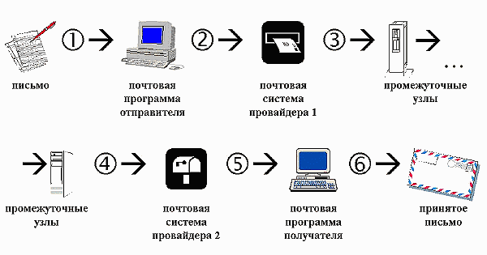
Рис. 12. Схема передачи электронного сообщения
В этой схеме под "письмом" понимается скорее зрительный образ, чем
соответствующий файл - программа и компьютерная система получателя могут
совершенно не соответствовать таковым у отправителя, не обязаны совпадать в этих
системах и русские кодировки. Однако мы все же считаем, что передается
электронное письмо, т.е. некоторая последовательность символов, а не сам
графический образ в виде картинки, иными словами, оставляем в стороне передачу
факсов, телеизображений и тому подобные вещи. И при всем при этом полученное
письмо должно соответствовать отправленному, хотя все равно остается свобода
толкований этого "соответствовать".
Есть два предельных случая во взглядах на электронную почту. Один - отправляя
письмо, я хочу, чтобы оно, как телеграмма, было прочитано любым получателем,
какая бы почтовая система у него ни была, возможно, просто алфавитно-цифровой
терминал или телеграфный аппарат, собственно, вполне реальная ситуация - простая
терминальная программа (Telix, Telemate), свободно
помещающаяся на дискету и применимая везде, где есть компьютер с модемом. Другой
предельный случай: письмо - это сложное художественное сооружение, и я хочу,
чтобы адресат получил в точности то, что я ему посылаю. И пусть для этого он
будет обеспечен соответствующими средствами. Ну и множество всевозможных
промежуточных вариантов и переплетений.
Будет считать верным следующее утверждение, хотя последнее время оно стало
иной раз вызывать возражения. В российском Интернете сложился фактический (т.е.
почти повсеместно принятый) стандарт электронной переписки, ориентированный в
большей степени на первый случай. В виде своего рода формулы он выражается так:
"plain text, KOI8-R, 8bit body, 8bit header", в последние год-два стало также
желательно "MIME". Т.е. фиксируется что передается - чистый текст (не
форматированный, не HTML), язык и кодировка - KOI8-R и как -
транспортная кодировка тела сообщения отсутствует (8bit body), в
заголовках разрешаются 8-битные символы, и они тоже не кодируются (8bit
header). Наконец, желательно указывать эти данные в заголовке письма, т.е.
оформлять его по стандарту MIME. В таком виде письмо должно уйти от
"провайдера 1" и в таком же виде оно должно прийти к "провайдеру 2" (участки
3 и 4). На участках 1 и/или 2 письмо может как-то
преобразовываться из исходного вида, удобного для отправителя, а на участках
5 и/или 6 - преобразовываться в вид, удобный получателю.
Эта схема замечательно работала (причем даже без MIME), пока основной
операционной системой двуединого провайдера Relcom/Demos
был UNIX, где КОИ-8 - "родная" кодировка (что, впрочем, справедливо не для всех
клонов UNIX), а основной операционной системой пользователей (фактическим
стандартом) был либо тот же UNIX (у пользователей "корпоративных"), либо DOS и
пакет UUPC, работавший автоматически и сам справлявшийся со всеми
перекодировками. За границу, правда, писать надо было латиницей, да и понятно -
откуда в американском UNIX или DOS возьмутся русские буквы. Появившиеся (или
ставшие известными) несколько позже провайдеры с терминальным доступом (вспомним
добрым словом Гласнет) вполне
адаптировались к этой схеме, обеспечивая перекодировку из DOS и в DOS для
пользователей (на участках 2 и 5). Идиллическую картину нарушали
только немногочисленные пользователи Macintosh'ей, у которых русская кодировка
была своя и мало кому известная.
Потом начался период разброда и шатаний. Фактическим стандартом операционной
системы пользователей становились, и вскоре стали разные версии Microsoft
Windows. В них были свои программы терминального доступа и весьма ограниченная
поддержка DOS-кодировки, в то же время разработанная в Microsoft новая кодировка
для Windows (совместимая по кавычкам и т.п. символам с другими кодовыми
страницами под Windows) была для провайдеров незнакомой и не поддерживаемой.
Однако революция произошла несколько позже - когда начал победное шествие
Интернет в нынешнем виде - в виде, главным образом, WWW, а фактическим
стандартом стал полноценный IP-доступ, дающий (прошу прощения за некоторую
тавтологию) непосредственный доступ к большинству ресурсов Интернет и фактически
уравнявший на той схеме участок 2 и участок 3, а также 4 и
5 и тем самым - применительно к почте - возложивший ответственность за
соблюдение стандартов на почтовые программы конечных пользователей. Программы же
в лучшем случае знали две кодировки - us-ascii, если в сообщении не было
8-битных символов, либо ISO-8559-1, если они там были. И никаких
перекодировок. Поэтому возникла задача внедрения KOI8-R в Windows,
появились koi8-шрифты (почти все без псевдографики) и koi8-раскладки клавиатуры,
что было не вполне удобно, не решало проблему корректного MIME-оформления, но
хотя бы решало проблему с кодировкой и читаемостью. Однако постоянное недоумение
пользователей в русле "зачем нам эта КОИ-8" заставило наиболее "близких к
народу" провайдеров взять на себя часть проблем адаптации пользователей
IP-доступа к стандартам и появились перекодирующие серверы, которые
позволяли ограничиться в Windows обычной поддержкой русского языка: передаваемая
русская почта перекодировалась из CP1251 в KOI8-R, а
принимаемая - из KOI8-R в CP1251. При всех удобствах такой
технологии, она очевидным образом является своего рода костылями, накладывающими
жесткие ограничения на форматы и язык письма, к тому же не укладывается в
интернетовские стандарты. Как правило, письма перекодируются независимо от
значения charset в заголовке (и это правильно, учитывая что он обычно либо
ISO-8859-1, либо KOI8-R для хакнутых программ, но в обоих случаях
не соответствует реальной кодировке письма), что позволяет без ограничений
посылать письма только на русском или английском языке и не позволяет менять
кодировку русского письма даже при необходимости. Впрочем, несмотря на все
обвинения провайдеров, прямой, неперекодирующий доступ всегда сохранялся, хотя
иногда он исчезал из списка рекомендованных новым клиентам.
А еще через какое время распространились общедоступные программы, которые
более или менее корректно сами умели работать с различными кодировками, в первую
очередь Microsoft Internet Explorer версии 3, а затем 4, и наличие
перекодирующих входов у провайдеров в сочетании с этими программами стало
приводить к порче электронных писем.
С другой стороны, большинство других почтовых программ либо также научились
поддерживать несколько кодировок, либо появились методы вставить в них поддержку
KOI8-R. В том числе на упоминавшейся страничке Андрея Чернова о
KOI8-R описан замечательный и практически беcпроблемный, хотя и отчасти
хакерский, способ включения KOI8-R в список языков и шрифтов
Windows'95/'98 (а недавно - также Windows NT). И такие подходы для большинства,
скажем, продвинутых пользователей, почти полностью решают проблему кодировок с
клиентской стороны.
Тем самым полезность перекодирующих серверов у провайдеров все более
снижается, а их роль как дополнительного источника проблем все растет.
В то же время действительно существуют узлы, не пропускающие восьмибитную
кодировку и, в лучшем случае, "обрезающие" восьмой бит, хотя таких узлов
становится все меньше. Совсем недавно русские конференции от Microsoft (
news://msnews.microsoft.com/microsoft.public.ru.*) заполонили безнадежно
испорченные сообщения, отправленные - как и большинство прочих сообщений в этой
конференции - через Outlook Express, причем сами авторы уверяли, что прекрасно
читают как себя, так и другие такие письма. Постепенно удалось прояснить, что
портились сообщения, посылаемые кружным - в данном случае - путем через
российские сервера новостей Демоса и России-он-лайн. Какой-то промежуточный немецкий
или французский сервер сводил все такие сообщения к чистому ASCII хотя и
известным, но самым варварским способом - слиянием всей (латинской) диакритики в
основные латинские буквы.
Наверно, могут существовать и узлы, занимающиеся перекодировкой проходящих
сообщений. Но, надо сказать, что пока не нашлось ни одного доказанного случая
существования такого узла рода и такого рода порчи сообщений, разве что я видел
как-то рекламу почтового сервера фирмы "DataX/FLORIN", занимающегося интеллектуальной
перекодировкой русских сообщений (с идеей блокировки непонятных случаев), но все
равно не в качестве промежуточного сервера. Можно вспомнить еще советский Устав
Связи - не исключено, что действующий до сих пор - где предписывалось письма за
границу писать "на понятном языке".
В то же время, особенно если не ограничиваться одним русским языком, проблема
с национальными (неанглийскими) языками существует совершенно объективно и
вызвана, в первую очередь, тем, что "законодатели" компьютерного мира находятся
сейчас в Америке и до сих пор ориентируются, главным образом, на английский
язык. Отсюда неудобства, недоработанность и противоречивость стандартов,
связанных с национальными языками, "недосовместимость" стандартов "снизу вверх",
отсюда еще более кривая реализация этих стандартов в популярных программах, тоже
американского происхождения. Однако проблема эта уже явно осознана крупнейшими
программистскими фирмами. Многажды охаянная корпорация Microsoft чрезвычайно
активно и весьма успешно (несмотря на все недоработки, кривости и "глюки")
внедряет интернационализацию в свои программы и системы, и можно надеяться на
появление через пару-тройку лет всеязычных Window NT. Однако проблема
разноязычной почты будет решена (или снята) только тогда, когда многоязычные
почтовые системы доберутся до самых глухих "медвежьих углов" электронного мира и
будут выступать в роли фактического стандарта.
По сути, как и в видеомагнитофонах, проблемы кодировок, проблемы стандартов -
это проблемы совместимости форматов и программного обеспечения, и ставиться, и
решаться они могут по-разному. Сами стандарты тоже не следует абсолютизировать.
Советско-российские ГОСТы, как можно видеть, вообще слабо соотносятся с
ситуацией, но даже стандарты Интернет могут оказаться не вполне подходящими. В
частности, регистрация кодировок их не более, чем фиксирует, но никак не
определяет условия или обязательность использования. В то же время явные запреты
или ограничения 8-битности почти полностью игнорировались и продолжают
игнорироваться. Так что разумно ориентироваться на более или менее общепринятое,
на стандарты de-facto, да и их соотносить с поставленными целями.
Можно сказать еще пару слов на избитую, обычно сводящуюся к неконструктивным
перебранкам тему "какая кодировка лучше". Основным преимуществом KOI8-R
является только то, что она представляет собой фактический стандарт и что
наличие стандарта лучше, чем его отсутствие. Как пишет Андрей Чернов, "иметь
одну сетевую кодировку удобнее по многим причинам, к примеру, проще склонить
производителей софта её поддержать." Если два этих обстоятельства отвергнуть, то
все остальные преимущества и недостатки становятся призрачными. Ясно, что в
связи с повсеместным распространением различных версий MS Windows все
усиливается давление со стороны Windows-кодировки и ее победа в будущем не
исключена. С ней меньше проблем в большинстве почтовых программ (хотя совершенно
непонятен жар в этом вопросе пользователей Outlook Express - как раз там
KOI8-R и Windows-1251, а также ISO-8859-5, как почтовые
кодировки, выступают практически на равных; другое дело, что и в Outlook Express
возникают многочисленные неудобства и "глюки", когда идет мешанина кодировок, в
итоге даже для работы в Outlook Express единообразие предпочтительнее).
Одно из реальных преимуществ Windows-кодировки именно в почте - пригодность
для большинства языков с кириллицей, что не обеспечивается KOI8-R и
привело к появлению украинских и белорусских клонов КОИ-8 (в частности,
KOI8-U). На WWW-страничках уже сейчас Windows-кодировка явно оттеснила
KOI8-R: вышеприведенная схема при попытке распространить ее на WWW
сокращается едва ли не до двух компьютеров - WWW-сервера и получателя с его
программой-смотрелкой.
Преимущества KOI8-R как почтовой кодировки тоже понятны - это полная
совместимость и наличие взаимно однозначного соответствия с русской
DOS-кодировкой (одним из вариантов CP866), включая псевдографику. Тем
самым обеспечиваются удобства для досовских пакетов UUPC, и, разумеется, для
взаимодействия с ФИДО. По не вполне
понятным причинам оказалось также, что встроить более или менее нормальную
работу с KOI8-R в программы под Windows проще, чем сделать это для почти
"родной" DOS-кодировки, к тому же (отвлекаясь от букв "Ё" и "ё") в KOI8-R
и CP1251 русские буквы занимают одну и ту же область, поэтому
всевозможные, даже многократные перекодировки друг в друга - в этой области -
оказываются взаимно однозначными, так что большинство испорченных сообщений в
принципе можно прочесть. Однако клоны КОИ-8, в частности KOI8-U (говорят,
есть и KOI8-B), уже не подходят под стандартную перекодировку
KOI8-R в DOS, в них отсутствует часть псевдографики, и их появление явно
не на пользу КОИ-8, я бы даже расценил регистрацию KOI8-U как чрезвычайно
сильный удар по статусу KOI8-R как "стандарта de-facto". И если
DOS-кодировка отомрет вовсе и потребность в псевдографике исчезнет, то реальных
преимуществ у CP1251 окажется больше. За одним, правда очень важным,
исключением - смена стандартов всегда процесс весьма болезненный.
Возвращаясь к обсуждению пути электронного письма, будем считать, что чаще
всего сообщение портится на этапе 2 - внутри почтовой программы и
провайдера отправителя. Если в эту систему входит еще многоуровневая (локальная)
сеть, возможностей порчи становится больше. На этапах 3 и 4 письмо
не меняется, а дальше свою лепту может вносить аналогичная система получателя на
этапах 5 и 6, хотя и с меньшей вероятностью, поскольку в нее
поступает обычно уже "скорректированный" вариант письма.
Тем самым мы считаем, что все события происходят:
1) Внутри почтовой программы-клиента, которая каким-то образом кодирует,
оформляет - и декодирует письмо;
2) В почтовой системе провайдера, в которой могут быть свои перекодирующие
входы (перекодирующие прокси-серверы), превращающие популярные русские кодировки
(windows, а также dos, mac) в KOI8-R, и, при приеме,
наоборот - превращающие KOI8-R в кодировку пользователя.
Огрубляя схему, мы, с одной стороны, имеем ситуацию у отправителя -
возможный источник извращенных сообщений, а с другой - принятое
письмо у получателя, результат, возможно, в извращенной кодировке.
Далее, будем различать MIME-сообщение и не MIME-сообщение (не содержащее
соответствующих MIME строк заголовка). Не MIME-сообщение, вообще говоря, не
должно содержать букв из второй половины кодовой таблицы ни в теле, ни в строках
заголовка (Subject и т.п.). От этого требования, правда, на практике
почти все давно отказались, особенно в "бывш. СССР", где прекрасно ходят русские
8-битные письма, в том числе с русскими заголовками. С таким сообщением все
должно быть довольно просто - появившись в почтовой программе в какой-то
кодировке оно (если нужно) перекодируется у провайдера в KOI8-R, а
попадая к получателю перекодируется в то, что нужно ему. Лучше всего, если этими
перекодировками занимаются соответствующие почтовые программы под полным
контролем пользователя. Возможен, но неудобен (или вообще не всегда доступен
конкретному пользователю) сложный процесс подготовки письма к отправке вручную:
сначала написать, затем перекодировать, затем передать почтовой программе, и
аналогично при получении. Особенно удобен перекодирующий сервис у провайдера для
терминального режима.
Однако если выбрать неправильную перекодировку, например, письмо в DOS
кодировке будет перекодировано функцией (win->koi), то по сети пойдет письмо
не в KOI8-R, и мы получим извращенный источник. Очень похожая
ситуация возникнет даже без каких-либо перекодировок, если в сети окажется
письмо в Windows-кодировке (для дальнейших целей назовем назовем такой источник
"Windows-извращением"). Именно последний случай был довольно частым на
начальном этапе распространения "Интернета под Windows". Получатель на другой
стороне, если он тоже пользовуется Windows, такое письмо, скорее всего, прочесть
сможет, но что делать пользователю DOS или Macintosh, для которого письмо будет
перекодировано функцией (koi->dos) или (koi->mac) соответственно? Если же
получатель пользуется Windows и перекодирующим входом, то для него
Windows-кодировка подвергнется преобразованию из KOI8-R в Windows, и
результат уже никакой стандартной кодировке не будет соответствовать, его можно
назвать "koi-to-win-извращением". Частый источник посылки
Windows-извращений - некорректная работа с перекодирующим сервером. Если
посылаемое сообщение предварительно перекодировано программой в 7-битное,
например, в Quoted-Printable, то через почти любые win-прокси такое - чисто
ASCII сообщение - пройдет неизменным, и только получатель обнаружит, что оно
пришло не в той кодировке. Правда, если получатель тоже "под Windows" и его
перекодировщик не слишком хитрый и не трогает 7-битные письма, он может ничего
не заметить и с полным правом утверждать, что у него "все читается".
Другой, одно время довольно частый вариант, встречается, когда пользователь
работает под Windows и пишет письма, как он считает, в Windows-кодировке, а
отправляет их через перекодировку win->koi (через win-прокси) у провайдера.
Но новая версия умной программы, которую пользователь себе поставил (MS
Mail&News, например), уже знает, что в сети должно быть KOI8-R и
отправляет письмо в этой кодировке. В результате в сети имеем KOI8-R,
перекодированное функцией (win->koi), что тоже не соответствует ни одной
стандартной кодировке, такой источник назовем "Winproxy-извращением",
результирующую кодировку - "win-to-koi-извращением". Именно в ней придут
письма к получателю, который не пользуется перекодирующим сервером. Однако и в
этом случае, если у получателя тоже Windows-перекодировщик, то сообщение будет
перекодировано обратно функцией (koi->win) и окажется в исходной кодировке
KOI8-R, так что его без проблем можно будет прочесть в MS
Mail&News.
Отрадным свойством извращенных кодировок, описанных в предыдущих абзацах,
является возможность восстановления испорченного письма - перекодировка между
CP1251 и KOI8-R стандартна и взаимно однозначна в области 32
русских букв, занимающих в них одну и ту же область. И на практике все
сообщения, за крайне редкими исключениями, оказываются в одной из четырех
кодировок: KOI8-R, Windows (CP1251), win-to-koi или
koi-to-win. Ситуация сильно осложняется, если лишним перекодировкам
подвергаются другие варианты. Даже стандартизованная и полностью взаимно
однозначная перекодировка между CP866 и KOI8-R на практике
встречается в разных несовместимых и не всегда взаимно однозначных вариантах, а
перекодировка между CP1251 и KOI8-R за пределами русских букв
вообще толком не стандартизована, и восстановить, скажем, исходное сообщение в
DOS-кодировке, подвергнутое такому преобразованию, простым способом не удастся,
если удастся вообще. Так, соответствующий перекодировщик в Гласнет всё, что не
входит в область русских букв, заменяет на "звездочки". В результате от
DOS-сообщения, подвергнутого перекодировке (win->koi) или (koi->win), хоть
как-то, пусть в перемешанном виде, сохраняется лишь половина алфавита, причем
только маленькие буквы. Остальное теряется безвозвратно!
А теперь - как обстоит дело с MIME-сообщением? По идее, здесь проблем быть
вообще не должно. Каждый фрагмент сообщения содержит указания, как именно он
закодирован, и почтовая программ получателя, руководствуясь этими указаниями,
восстанавливает первоначальный вид письма. Никакой перекодировки у провайдера
здесь, казалось бы, не требуется (во избежание извращений). Тем не менее
реальность гораздо сложнее и хуже:
1) формат MIME должна понимать программа получателя, в ней должны быть также
заложены использованные в сообщении типы MIME (не вполне стандартизованные),
наконец, поскольку для передачи текста используется символьная кодировка (а не
картинка), в ней должны быть соответствующие (русские) шрифты. При этом должен
правильно изображаться, например, как фрагмент текста в KOI8-R кодировке,
так и фрагмент текста в Windows-кодировке (если используется один и тот же шрифт
- например, внутренней перекодировкой). Надо ли говорить, что программ,
реализующих все это - одна-две и обчелся (по сути, претендентом может быть
только MSIE начиная с версии 4).
2) Кроме того, сообщение должно быть понято программой, не знающей про
MIME вообще (большинство старых версий программ). А это фактически запрещает
использование в сообщении кодировок, отличных от KOI8-R (как в одном, так и в
разных фрагментах), тем более недопустима отправка разноязычных сообщений
(скажем, русско-ивритско-арабско-грузинских).
Конечно, эти ограничения отпадают, если считать, что в нарисованной схеме
"полученное письмо" не является зрительным образом, а является, скажем, файлом,
который передается затем другой программе (или нескольким), и только тогда оно
превратится в зрительный образ. Однако с точки зрения схемы в этом случае можно
считать, что у получателя таки имеется MIME-совместимая почтовая программа,
составленная из всех использованных, и, включающая, в частности, разум
получателя.
3) Отправляемое сообщение должно быть корректно оформлено в программе
отправителя - указания на язык и кодировку (поле Content-Type и подполе charset)
должны соответствовать использованным и не должны искажаться по пути. Этой
возможности у многих программ тоже нет, к тому же очень часто корректность
charset теряется на перекодирующих серверах.
Т.е. в целях совместимости MIME-сообщение должно подчиняться тем же правилам,
что и без MIME. Однако программ, старающихся корректно обрабатывать MIME
становится все больше, поэтому наличие MIME-оформления является более
предпочтительным, чем его отсутствие. Хотя бывают и исключения, о некоторых из
них будет сказано ниже.
Дьявол кроется в
деталях. Впервые услышано от Маргарет
Тэтчер.
Этот раздел посвящен извращенным наклонностям различных программ, что
наполняет жизненным материалом абстрактные схемы предыдущих разделов, без
которых, в свою очередь, верный взгляд на вещи невозможен.
С этой программы, без сомнения, следует начать разговор (см. http://www.pegasus.usa.com/, недавно
появилась ее новая версия под Windows - 3.01b). Pegasus (впрочем, по-русски это
будет просто Пегас) - замечательная freeware, т.е. бесплатная почтовая
программа, очень многие прекрасно работают с ее DOS версиями (в сетях Netware)
и, кажется, без особых проблем. Однако первые версии Pegasus Mail for Windows
оказалось практически невозможным применять в русской переписке, другого
такого примера я не знаю! Автор программы (Давид Харрис) поставил себе задачу
даже сложнее микрософтовской - чтобы его программа одинаково работала во всех
системах (DOS, Windows, сетях Netware), и при этом были бы соблюдены
интернетовские стандарты, зафиксированные в RFC. Было решено, что у
любого языка есть 2 кодировки - DOS, она же сетевая, и Windows. Что для русской
жизни верно в единственном случае - если передавать/принимать почту через
DOS-proxy.
Если Пегас получает не MIME-сообщение, то он, хотя и сохраняет его в исходном
виде, показывает после перекодирования в Windows-кодировку (с помощью системных
функций, 16-битные версии используют xlat866.bin и т.п.). И только в режиме
"показать все заголовки" или сохранив сообщение, его можно увидеть в
"натуральном виде".
Если же принято MIME-сообщение, то оно перекодируется по таблицам wpm-lmtt, в
зависимости от поля charset. Для DOS-proxy, если бы кто-то решил именно им
воспользоваться, надо было бы делать таблицы перекодировки (dos->win).
Дополнительный забавный нюанс - в предпоследних версиях Пегаса появились таблицы
для КОИ8 (koi->win перекодировка), но обозначенные как koi-8r. Что
очень, очень похоже на правильное обозначение, но, увы, ни в каком стандарте не
прописанное... В версии 3, впрочем, обозначение стало правильным -
KOI8-R.
Но это еще цветочки. Ягодки начинаются при попытке отправить русское
сообщение. Если разрешить MIME, то оно перекодируется по таблице и передается,
дополнительно перекодируясь еще в Quoted-Printable. Не MIME сообщение
сначала перекодируется в DOS-кодировку, а затем еще раз перекодируется по
специальной таблице (по замыслу в us-ascii), где некоторые буквы
превращаются в (слова) Sigma, Rho, Tau, Theta, Omega, delta, Epsilon, да и от
других мало что остается. Восстановить такое сообщение, как правило, невозможно!
Саму таблицу можно править (хотя все это из той же темы слежения за
разбегающимися тараканами), но попытки через нее вернуть то, что было
(перекодировать как бы обратно в CP1251 и получить при этом искомую
KOI8-R) - не удавались, 8-битные символы все равно не пропускались. Лишь
сравнительно недавно я узнал об особенностях (вернее, ошибках) алгоритма
перекодировки и что с проблемой все-таки можно справиться (при работе в
CP1251 следует использовать таблицу перекодировки из CP866 в
KOI8-R лежащую в http://www.cor.neva.ru/~aal/pegasus/wpm-char.r).
По мере появления новых версий программ в них сначала появилась возможность
передачи 8-битных сообщений (только тела, не заголовка и с дополнительным
предупреждением о нежелательности этого), что позволило нормально работать в
MIME с KOI8-R, соответствующая таблица должна "ничего не перекодировать"
(каждому элементу соответствует он сам). И только в прошлом году, в версии для
Windows от марта 1997 г. - версии 2.53 - появилась возможность отмены
перекодировок для не MIME-сообщений - ключ "-Z 32768", а в версии 3,
видимо, чтобы всех запутать, значение этого ключа поменялось на обратное, т.е.
по умолчанию никаких перекодировок DOS - Windows не производится, а
наличие ключа переводит в режим с перекодировками. Но судя по всему (если
там нет еще каких-то скрытых каверз), теперь программу можно настроить на
нормальную работу с любым сообщением в KOI8-R (или в Windows-кодировке через
перекодирующий win-proxy)! И тогда Pegasus Mail оказывается наиболее гибкой
почтовой программой под разные Windows, которая позволяет передавать и принимать
как MIME-сообщения, так и сообщения без MIME-оформления и какой-либо
перекодировки и позволяет формировать произвольные собственные заголовки. Это
делает Pegasus Mail хорошим запасным вариантом к основной почтовой программе и
хорошим отладочно-диагностическим средством, но "основным мэйлером" Пегасу уже
не стать...
Броузеры Netscape включают средства
работы как с почтой, так и с конференциями. Начиная с версии 3 в них появилась
поддержка русских кодировок, в частности KOI8-R и Windows-1251.
Однако способы обращения Netscape с кодировками в почте и конфе. Однако способы
обращения Netscape с кодировками в почте и конференциях отличаются
непредсказуемостью, причем даже соседние версии и подверсии могут вести себя
сильно по-разному, а логика работы в почте может отличаться от логики в
конференциях. В версии 4 программа стала более юникодовой и перестала нуждаться
в специальных KOI8-R шрифтах, однако тотальной юникодовости и прозрачной
логики MSIE не достигла, Netscape так и не научился показывать псевдографику в
KOI8-R. Зато если при создании сообщения выбрать кодировку Cyrillic
(Windows), то при отправке оно перекодируется и промаркируется как
KOI8-R.
Если же выбрать кодировку KOI8-R, то некоторые (третьи) версии
Netscape позволят ввести сообщение в Windows-кодировке, но не будут его
перекодировать, и оно уйдет в кодировке Windows, промаркированное тем не менее
как KOI8-R (по отзывам работавших с Netscape 3 for Macintosh, положение с
Cyrillic (Мac) примерно такое же, как с Cyrillic (Windows) в версиях для
Windows). Если верить "International
Release Notes", в
последних (четвертых) Windows-версиях Netscape в качестве кодировки кириллицы
для исходящей почты жестко зафиксирована KOI8-R: "Cyrillic mail is sent
out using KOI8-R encoding.", но неизвестно, во всех ли случаях все корректно
преобразуется.
Все вышесказанное, конечно, усиливает аромат непредсказуемости Netscape. Тем
не менее начиная с версии 4 его можно настроить на вполне корректную работу с
русским языком (тщательно проверив особенности текущей подверсии). В более
ранних версиях, впрочем, тоже можно было извернуться и добиться более или менее
приемлемого варианта, установив KOI8-R-шрифты и клавиатуру или посадив
русский в Windows-кодировке на latin2 и смирившись с ISO-8859-2 в
заголовках писем и внешним перекодировщиком.
Вообще, остается загадкой, что же помешало команде, сделавшей замечательную
программу просмотра WWW, с самого начала сделать удобную и не кривую подсистему
Mail&News. Проблемы русификации Netscape детально обсуждаются на страничке
Павла Городянского http://www.siber.com/sib/russify/ms-windows/netscape.html.
Начиная с этой версии Internet Explorer стал сравнительно корректно
поддерживать как Windows-1251, так и KOI8-R (хотя пока через
внутреннюю перекодировку и без псевдографики), стал ставить KOI8-R в
качестве почтовой кодировки по умолчанию - и вошел в противоречие с
перекодирующими серверами. Поток win-to-koi-извращений не кончается до
сих пор. Internet Mail &News, пожалуй, первыми из почтовых программ
научились проверять русскую орфографию (впрочем, пользуясь соответствующими
компонентами из Microsoft Office). Еще одним источником проблем стали
письма-ответы. В частности, при ответе на письмо с неверным указанием кодировки
(например, ISO-8859-1) порождается письмо с тем же - неверным -
обозначением кодировки и с KOI8-R внутри, непросто изменить кодировку и
при ответе на письмо в Windows-1251.
Эта, теперь уже предпоследняя, версия (на подходе MSIE 5) основана на Unicode
и отличается наилучшей поддержкой многоязычности и различных русских кодировок,
хотя породила ворох новых проблем и содержала множество новых ошибок. Отметим
только самую бросающуюся в глаза - русская (как и английская) версия пакета
разучилась проверять русскую орфографию и научилась этому вновь только в Service
Pack 1 (или в версии из Windows'98). Несмотря на явную несовместимость с
перекодирующими серверами поток win-to-koi-извращений все еще не
иссякает, а поддержка юникодовых форматов (UTF-7 и UTF-8) привела
к их нередкому появлению в конференциях, при отсутствии в этом какой бы то ни
было необходимости. Усиливает неразбериху и наличие в способах отправки
сообщений так называемого UUENCODE. Возможно, приложения при этом
действительно кодируются в UUENCODE, но основной текст письма остается
некодированный, в произвольной кодировке (хоть бы UTF-7 или
UTF-8), но совершенно без MIME-оформления, что блокирует автоматическое
распознавание неразберихи кодировок (в MSIE 5 анонсирована возможность
"угадывания" кодировки, что, конечно, хорошо, но хуже отсутствия необходимости
"угадывать"). Еще более ухудшает ситуацию то, что ряд настроек, в том числе MIME
или UUENCODE, единые для всех писем и всех и групп новостей, хотя хитрой
манипуляцией со сменой настроек в процессе создания и отправки очередного
сообщения что-то можно поменять, проблемы это не решает.
Почтовый пакет (имеются бесплатные версии Light и коммерческие
Pro, см. http://www.eudora.com/)
почти без неожиданностей, за исключением того, что приложения сразу же
раскодируются и сохраняются в отдельном месте, а принятое "raw message"
становится недоступным. Во всех версиях Eudora до настоящего времени (4.02 для
Windows'95/NT) в нее включены ровно 2 языковые кодировки (MIME-charset) -
us-ascii (т.е. 7-битный код без русского) и ISO-8859-1 (8-битный
код, но тоже без русского), однакое тем или иным способом программу можно
настроить корректную работу в русской сети (см. раздел 4). Извращенные сообщения
в Eudora могут появиться только при отправке их в формате
Quoted-Printable через перекодирующий сервер (не считая, конечно, просто
сообщений в Windows-кодировке).
Чрезвычайно гибкий пакет для работы с почтой и новостями (есть сокращенная
бесплатная версия Free Agent и коммерческая Agent, см. http://www.forteinc.com/), позволяет
определять свои кодировки MIME и таблицы перекодировок для них, а также (не в
пример Outlook Express) задавать множество настроек для отдельных групп
новостей. Содержит таблицы для KOI8-R (помимо норвежского, шведского и
японского языка). Интересно, что несмотря на свою американскую природу активно
учитывает существование русского языка - почти все языковые примеры в его
справочной системе относятся к русскому языку и русским конференциям. Работает
почти без неожиданностей, однако при использовании таблиц перекодировок
заголовки (в том числе Subject) не перекодируются. Извращенные сообщения могут
появиться при некорректном использовании таблиц перекодировки или при отправке
сообщений в Quoted-Printable через перекодирующий сервер. Однако, в
отличие от Outlook Express, при ответе используется не кодировка исходного
письма, а кодировка для группы новостей или писем по умолчанию, что оказывается
гораздо более удобным и безопасным. Создание своих таблиц перекодировок выявило
ряд "глюков" в их функционировании, но из неюникодовых программ Forte Agent -
наиболее многоязычная и гибкая.
Эта, сравнительно недавно появившаяся почтовая программа молдавских
программистов (http://www.ritlabs.com/),
своей гибкостью и русско-ориентированностью завоевавшая большую популярность,
отличается фантастической частотой выхода новых версий (чуть ли не один-два раза
в неделю). Встроенная в последние версии возможность чтения извращенных
кодировок, к несчастью, позволяет с легкостью создавать свои извращенные
сообщения; еще один традиционный их источник - использование перекодирующего
сервера при наличие внутренней перекодировки отправляемых сообщений в
KOI8-R. Позволяя создавать свои кодировки, программа, однако, не
поддерживает Unicode (как и Forte Agent), а таблицы перекодировки ущербны
изначально - для перекодировки в обе стороны используется одна и та же таблица,
что корректно работает только в случае взаимно однозначного соответствия, чего
практически никогда не наблюдается, поскольку основной кодировкой в The Bat
является Windows-кодировка. В опробованных мной версиях из-за этого при отправке
сообщений неправильно перекодировалась русская буква "ё".
Этот наиболее известный и еще не умерший - несмотря на победное шествие уже
которого поколения "Окошек" - пакет под DOS, обеспечивающий работу по
uucp-протоколу (опечатки нигде нет!), разработан и поддерживается Черновым,
инициатором стандартизации в Интернете кодировки KOI8-R и автором
соответствующего RFC1489. Как ни
печально, но ряд версий пакета среди 6.* не показывает нормально русское
MIME-сообщение, кажется, независимо от того, стоит ли там charset=koi8-r или
другой незаконный charset. Судя по всему (доверяя больше рассказам знатоков) в
этих версиях пакета собственно uucp-компонента, обеспечивающая прием/передачу
сообщений перекодирует все принятые сообщения из КОИ8 в DOS. В то же время
"визуализирующая" компонента пакета - программа DMail - сообщения с MIME
перекодирует обратно и показывает их, тем самым, в КОИ8. Так что нормально их
можно увидеть только включив в DMail функцию перекодировки из КОИ8 в DOS (она
там, обычно, есть). Посылаемые сообщения в этих версиях не имеют
MIME-оформления. Версия пакета 7 уже вполне согласована внутри себя, нормально
принимает как MIME-, так и не MIME-сообщения (корректно показывая также
псевдографику), но отправляет (из DMail) уже только как MIME, тем самым вызывая
проблемы у пользователей более ранних версий. Почему-то эти проблемы наблюдаются
только в почте, возможно, news-mail сервер убирает MIME-оформление у сообщений в
конференциях.
После операции часть
больных остается прикована к постели, но качество их жизни, если так можно
выразиться, при этом все же улучшается. По мотивам чего-то
медицинского.
К сожалению, однозначного ответа здесь нет, но стремиться следует все-таки к
соблюдению по возможности писаных и неписаных стандартов, а не к уклонению от
них. Впрочем, при понимании, как все устроено, не запрещены и отклонения от этих
рекомендаций, как и раньше, "древо жизни пышно зеленеет". Дальше учитываются два
наиболее распространенных сейчас варианта работы с Интернет из-под Windows: без
перекодирующего сервера, напрямую в KOI8-R, и через Windows-перекодирующий
сервер, или win-proxy (перекодировки win->koi и koi->win).
4.1.1. Сообщения по России или славянским государствам "бывш. СССР".
1) Вариант с MIME:
a) Если не используется win-proxy - сообщения в KOI8-R, c 8-битным
телом (не используется Quoted-Printable или Base64) и 8-битным
заголовком (не используется кодирование заголовков), оформленные как MIME
(указывается charset=koi8-r), с единственной секцией, содержащей сообщение.
b) Если используется win-proxy - то же самое, но в кодировке Windows
(CP1251), для большинства нынешних перекодирующих серверов в заголовке
должен указываться тот же charset=koi8-r.
Желательно не использовать русских букв в Subject.
Проблемы могут быть у пользователей промежуточных версий UUPC.
2) Вариант без MIME (менее предпочтительный):
a) Если не используется win-proxy - сообщения в KOI8-R, 8-битные, без
MIME-оформления (и без перекодировки как тела, так и заголовка);
b) Если используется win-proxy - то же самое, но в кодировке Windows
(CP1251).
Желательно не использовать русских букв в Subject.
Проблемы могут быть у пользователей старых версий Pegasus Mail for
Windows.
4.1.2. Сообщения за пределы "бывш. СССР".
Здесь не следует надеяться на наличие не MIME-программы (скажем,
терминальной), понимающей русский язык, так что у адресата должна быть
графическая операционная система (часто таковой являются все те же Windows-*) и
MIME-совместимая почтовая программа. Пожалуй, наилучшим выбором для большинства
сейчас стал Outlook Express, возможен также Forte Agent 1.5. Но за границей
более популярным остается Netscape, с которым, особенно в версиях ниже
четвертой, проблем бывает довольно много. Кроме того, в системе должны иметься
русские шрифты, желательно как в кодировке Windows, так и в кодировке
KOI8-R (хотя в Windows'95 и NT 4 при соответствующих хакерских
исправлениями можно обойтись родными многоязычными шрифтами и для
Windows-кодировки, и для KOI8-R). Более желательным становится не
использовать 8-битные кодировки, а кодировать тело сообщения
Quoted-Printable или другим допустимым способом. При этом, правда,
теряется возможность пользоваться перекодирующими серверами. И, естественно,
русские буквы в Subject становятся крайне нежелательными.
Если же у адресата уже есть некоторая почтовая система, которую он не хочет
менять, то остается выяснять путем экспериментов, какие именно сообщения он
способен принимать и декодировать и выбрать в итоге взаимоприемлемый способ.
Таким способом вполне может стать использование DOS-кодировки, последующее
UU-кодирование текста и отправка его в теле сообщения. Большинство программ,
однако, воспринимает UU-кодированный фрагмент как приложение, так что теряется
возможность его просмотра "в теле" и автоматического квотирования при ответе. Но
для кого-то это может оказаться удобным.
По моему опыту, возможность писать за границу иначе, как транслитерацией,
возникает очень нечасто, хотя проблемы тут скорее человеческие, чем технические.
Впрочем, с распространением Windows NT 4 поддержка русского за границей
встречается все чаще, чего - увы - нельзя сказать про UNIX-системы.
Практически все современные версии почтовых программ умеют раскодировать
практически все транспортные кодировки, за исключением BTOA: мне не известны
почтовые клиенты под DOS/Windows, которые бы работали с BTOA. Поддержка
транспортных кодировок появляется сейчас и в других категориях программ, в
частности, последние версии WinZip свободно
читает файлы в Base64. На редкость универсальным кодером/декодером
является Windows Commander в последней
версии 3.52 (Base64, UUEncode, XXEncode, декодер BinHex). Разумеется, существуют
отдельные декодеры для этих форматов. Достаточный набор программ под DOS
содержится в КИАрхиве (http://www.kiarchive.ru/pub/msdos/convert/bin2text/):
btoa.zip
- кодер/декодер BTOA;
mime64b.zip
- кодер/декодер Base64;
mimeqp.zip
- кодер/декодер Quoted-Printable;
uuexe525.zip
- кодер/декодер UUENCODE и его вариации XXENCODE, программа от R.E. Mark,
каноническая, при этом чрезвычайно гибкая и универсальная (с поддержкой и
автораспознаванием секций UUENCODE). Версия довольно старая, но полностью
совместимая с более поздними - развитие шло, в основном, в сторону создания
версий под Windows и увеличения гибкости в расшифровке и умения справляться с
некоторыми ошибками;
xbin3.zip
- декодер макинтошного формата BinHex;
ecd6dos.zip
- набор утилит ESS-Code 6.6 для кодирования/декодирования UUE/MIME/BTOA и
формата SHIP.
uudecode.txt
- интересная стартовая программа для начала работы с двоичными файлами. Это
текстовый файл, который при переименовании в uudecode.com становится
работоспособной DOS-программой - UU-декодером.
К транспортным кодировкам примыкают юникодовые форматы UTF-8 и
UTF-7. К сожалению, несмотря на обилие различных перекодирующих программ
(и на то, что эти форматы не сложнее, скажем, Base64), мне не удалось
найти программы перекодировки из UTF-8/UTF-7 в кодировку DOS или Windows.
Не считая, конечно, больших броузеров и их почтовых компонент (Outlook Express и
т.п.) или Word'97. [И на нынешний момент (декабрь 1998 г.) мне
известен еще разве что доработанный мною же перекодирующий макрос для MultiEdit версии 7 и выше, см. fonts_cyr.htm#transcode.
Добавление от марта 1999 г. Поддержка UTF-8/UTF-7 обнаружилась
в декабрьской 1998 г. версии 1.2 универсального перекодировщика Александра
Горлача ECoder. Shareware 10$,
30 дней срок бесплатного пользования.]
Работа в DOS и DOS-кодировке практически невозможна без перекодирующего
сервера, поэтому можно не рассматривать разные варианты настроек.
Проявление основных осточников извращений:
Windows-извращение. Текст попадает в сеть в кодировке Windows, а у получателя
преобразуется из KOI8-R в DOS: (win) - (koi->dos).
Восстановление. Преобразовать обратно в KOI8-R (благо функция
обратима), а затем из Windows в DOS: (text) - (dos->koi) - (win->dos).
Winproxy-извращение: Текст в KOI8-R преобразуется по новой из Windows в
KOI8-R, а у получателя преобразуется из KOI8-R в DOS: (koi) -
(win->koi) - (koi->dos) = koi - (win->dos), т.е. имеем взаимное
"сокращение" преобразований.
Восстановление: преобразовать как бы из DOS-кодировки в Windows, а затем
преобразовать как бы из KOI8-R в DOS: (text) - (dos->win) -
(koi->dos).
Это хороший, бесплатный, универсальный перекодировщик (последняя версия -
1.5, http://www.lexa.ru/arrow/xcode.htm),
работает через командную строку, авторы - Павел Сенаторов и Эмиль Сильдос.
Программа знает про все 5 популярных русских кодировок (DOS,
KOI8-R, Windows, Mac, ISO-8859-5), умеет
перекодировать из каждой из них в любую другую (хотя перекодировка из
KOI8-R в DOS и наоборот, увы, неверна в области псевдографики), а
также может формировать файлы, полученные в результате двойнойперекодировки исходного файла и выдавать либо все полученные результаты -
которых оказывается 36, если не включать Mac-кодировку, либо 80 - если ее
включать, - либо выдавать выборочные результаты, которые программа считает
наиболее похожими на русский текст. Во многих случаях, когда текст в одной
кодировке, а не в смеси нескольких, в выборочном режиме выдается один правильный
результат. В последней версии программа "понимает" длинные имена файлов
Windows'95/'98, а таблицы перекодировки "выделены стрелочками" в двоичном файле
программы, что позволяет их законно править, вариант с исправленными таблицами
перекодировки - пока авторы сами этого не сделали - лежит на моей страничке (xcode_.zip).
Из небольшого набора имеющих отношение к теме средств под DOS можно упомянуть
примыкающий к программам перекодировки патч для WPVIEW из Norton Commander 4,
заменяющий формат XyWrite на KOI8-R, в заголовке окна при этом
показывается неверный формат, но в остальном все работает правильно. От автора
известны только инициалы YJH, а файл с патчем (1.8 кб) доступен по wpv_koi.zip. Правленый
WPVIEW позволяет смотреть "в Нортоне" KOI8-R-сообщения, а тексты в
Windows-кодировке он умеет смотреть от природы (при соответствующей настройке
кодовой страницы в DOS и наличия нужные таблиц в SET-файлах в каталоге Norton
Commander).
Под Windows нельзя не учитывать разных вариантов работы, которых, главным
образом, два: работа без перекодирующего сервера более или менее универсальной
почтовой программы (обычно это обозначается как работа в KOI8-R, хотя
французский или китайский языки тоже под этот вариант подпадают, но мы пока все
больше про русский говорим) и работа через перекодирующий сервер, который всю
отправляемую почту перекодирует из Windows в KOI8-R (на этапах 2 -
3 рис. 12) , а принимаемую - из KOI8-R в Windows (на этапах 4 -
5). Как правило, перекодировка осуществляется "тупо", без анализа
сообщения. Есть еще некоторый промежуточный вариант - перекодирующие средства на
компьютере получателя: либо внутренний proxy-сервер, либо популярный
RSOCK32.DLL, см. http://blue.iris.mipt.ru/timur/binaries/rsock32.zip
(этапы 1 - 2 и 5 - 6), что, по сути, равносильно
внешнему перекодирующему серверу. Особый и непонятный случай - интеллектуальный
перекодирующий сервер, обращающий внимание на структуру сообщения, пытающийся
угадать его кодировку и в зависимости от результатов анализа - интеллектуально
перекодирующий сообщение. В жесткую схему его не включишь, но тем не менее в
подавляющем большинстве случаев мы имеем один из двух указанных вариантов (быть
может, для разных писем разный): отсутствие перекодировки или перекодировка
между Windows и KOI8-R. (В целях не умножения сущностей я все время пишу
KOI8-R, хотя какая там может быть перекодировка из Windows в
KOI8-R при столь различных - за пределами русских и английских букв -
наборах символов, тем более, что едва ли не у каждого провайдера она своя, и
писать просто КОИ8, быть может, было бы даже правильней.)
Проявление основных источников извращений:
a) Работа без перекодирующих серверов (в KOI8-R)
Windows-извращение: (win) - вместо (koi).
Восстановление. Просто преобразовать в KOI8-R, или читать в
Windows-кодировке: (text) - (win->koi).
Winproxy-извращение. Текст в KOI8-R преобразуется по новой из Windows
в KOI8-R: (koi) - (win->koi).
Восстановление. Преобразовать обратно как бы из KOI8-R в Windows:
(text) - (koi->win).
b) Работа через перекодирующий win-proxy-сервер:
Windows-извращение. Сообщение в Windows-кодировке у получателя перекодируется
из KOI8-R в Windows: (win) - (koi->win).
Восстановление. Преобразовать обратно как бы из Windows в KOI8-R,
получится снова Windows: (text) - (win->koi).
Winproxy-извращение. Сообщение в KOI8-R у отправителя преобразуется
как бы из Windows в KOI8-R, а у получателя из KOI8-R в Windows, в
результате оказывается просто в KOI8-R: (koi) - (win->koi) -
(koi->win) = (koi).
Восстановление. Преобразовать в Windows или читать в KOI8-R: (text) -
(koi->win).
Интересно, что и для KOI8-R, и для Windows-кодировки для
восстановления сообщений, пострадавших от наиболее популярных извращений,
достаточно однократной перекодировки и не требуется двойной. Разумеется,
восстановить можно только русский текст, псевдографика KOI8-R или особые
символы Windows-кодировки, скорее всего, потеряются безвозвратно, и восстановить
их если и можно будет, то только по смыслу.
4.3.2.1. Pegasus
Mail for Windows
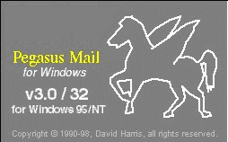
В этой программе нет возможности динамического выбора
языка и кодировки сообщения (шрифты и charset задаются в постоянных настройках).
Существует режим показа исходного сообщения (замаскированный под Show all
headers), что иногда помогает прочесть сообщение. Есть еще возможность написания
пользовательских вставок в программы (forms), однако перекодирующие и вообще
"русско-ориентированные" вставки в Pegasus Mail неизвестны. В версии 3 заявлена
возможность чтения HTML и интеграции с MSIE.
В этих программах нет
пользовательских таблиц перекодировки, но можно выбирать среди возможных русских
кодировок, что позволяет справиться с одним из двух популярных извращений:
при работе в KOI8-R - с Windows-извращением, а при работе через
win-proxy (что, впрочем, для Mail&News и Netscape 4 категорически не
рекомендуется) - c Winproxy-извращением, просто выбором другой русской кодировки
(Windows или KOI8-R, соответственно).
В Netscape 3.0-3.04 для возможности такого выбора необходимы шрифты
KOI8-R, Netcape 4 и MS Mail&News в дополнительных шрифтах не
нуждаются. Однако в Netscape 4.05 (про который ходят слухи, что он-то с русским
работает оптимальным образом), такое переключение понятным образом действует
только на показ исходного текста (Page Source), а само окно с текстом ведет себя
более странно и переключается не всегда, но почти всегда читается. Это
заставляет заподоздрить наличие долгожданного автораспознавания через угадывание
кодировки, но мне не попалось информации о том, что в Netscape действительно
реализована возможность, только еще анонсированная в MSIE 5.
Заметки об MSIE 4 и Outlook
Express были напечатаны в Hard'n'Soft 9'98. Поддержка кодировок в Outlook
Express основана на системных NLS-файлах (CP_nnnn.NLS в Windows'95/'98 и
C_nnnn.NLS в Window NT 4). Поддерживается множество русских кодировок
(Windows, ISO, KOI8-R, DOS), украинская и еще больше
нерусских, причем между ними можно переключаться независимо от поля charset в
заголовке, если это поле оказалось не соответствующим реальности. Тем самым
Windows-извращение оказывается в Outlook Express в пределах нормы, а поддержку
Winproxy (win-to-koi-извращения) оказалось возможным добавить, создав
соответствующий (извращенный) файл NLS (метод работает во всех версиях OE 4 и в
OE 5beta1). Для Windows'95/'98 и для Windows NT 4 нужные файлы можно найти в fonts_app.htm#msie4.
После этого извращенная кодировка оказывается в списке Outlook Express на равных
с прочими, что позволяет без проблем читать в ней сообщения, однако ответ
Outlook Express всегда создает в кодировке исходного сообщения, и если вовремя
не переключиться (что требует нескольких нажатий мышкой и проверки результата),
то в сеть с чрезвычайной легкостью, причем без всякого proxy, уйдет
win-to-koi-извращение, к тому же с несуществующим
charset=wintokoi.
4.3.2.4. Eudora 3 и
4
Подробная статья о Eudora Pro 3 была напечатана в Hard'n'Soft 2'98. Во всех существовавших до
сих пор версиях Eudora не было возможности выбора языка и кодировки сообщения
(помимо выбора шрифтов в постоянных настройках), однако появилась возможность
чтения HTML-сообщений и есть возможность написания пользовательских вставок
(plug-in's в Eudora Pro). Для корректного применения программы в русской жизни в
нее требуется вставлять KOI8-R путем правки двоичных файлов (версии 1.* и
2.* - Eudora.exe, версия 3.* и 4.* - Eudora32.dll). Однако за время, прошедшее с
написания статьи, был доработан plug-in Евгения Суровегина ( http://www.glasnet.ru/~ebs/koi8plugin.html),
который позволяет без хакерской правки задавать MIME-charset отправляемого
сообщения KOI8-R или Windows-1251, читать и перекодировать
сообщения в KOI8-R и Windows-кодировке, а также распознавать и читать
сообщения в двух популярных извращенных кодировках - win-to-koi и
koi-to-win, что в большинстве случаев решает проблему чтения приходящей
почты без внешних перекодировщиков, хотя и не может полностью заменить
использование KOI8-R шрифтов и клавиатуры или перекодирующего сервера.
Дополнительной возможностью plug-in'а является автоматическая транслитерация
русского текста. Тем не менее Eudora не понимает юникодовые кодировки (похоже,
что в этом ей не помогла даже интеграция версии 4 с MSIE 4).
Подробная статья о Forte Agent и его настройках была напечатана
в Hard'n'Soft 3'98. В коммерческий
(бесплатный этими возможностями не обладает) Agent можно включить поддержку
всевозможных языков и однобайтовых кодировок, в том числе извращенных. Принципы
такой поддержки были описаны в статье (они основаны на CSM-файлах), а сами
наборы файлов для разных вариантов работы можно найти на страничке soft.htm. Agent в выгодную
сторону отличается от Outlook Express тем, что при ответе на письмо в любой
кодировке всегда выбирается кодировка по умолчанию (которую можно изменить для
каждого сообщения вручную), поэтому риск случайно отправить сообщение в
извращенной кодировке становится крайне мал. Однако Agent не поддерживает чтение
HTML-сообщений и не поддерживает юникодовых форматов (UTF-8,
UTF-7). Правда, некоторым, довольно кривым способом можно научить Agent
читать русские сообщения в UTF-8, если его не испортили внешние
перекодировщики, реально - при работе без перекодировщиков (соответствующие
файлы входят в указанный выше набор), однако UTF-7 (к счастью,
встречающийся довольно редко) явно ему не по зубам.
Подробная статья про The
Bat! была напечатана в Hard'n'Soft
5'98. С тех пор вышло много новых версий программы (последняя версия на момент
написания данной статьи - 1.039), в число понимаемых кодировок были вставлена
ISO-8859-5 и Mac, а также 2 извращенные кодировки: "KOI8
autoconverted from 1251", charset=KOI8-WIN (win-to-koi-извращение) и
"1251 autoconverted from KOI8", charset=WIN-KOI8 (koi-to-win-извращение),
не без некоторых мелких ошибок, которые, в принципе, можно исправить - таблицы
перекодировки открыты, но пусть лучше этим занимаются авторы. Как и в Outlook
Express, ответ порождается в кодировке, в том числе извращенной, которая была
приписана сообщению, и для ее изменения требуются дополнительные манипуляции.
Читать HTML-сообщения The Bat! пока не научилась, не поддерживаются и юникодовые
кодировки.
Это универсальный перекодировщик (http://russia.agama.com/mailreader),
очень интересная по идее программа, причем вполне работающая. Однако, как уже
говорилось, некоторые идеи, содержащиеся в ее описании, вызывают резкие
возражения. Программа представляет собой текстовый редактор и вставку к MS
Exchange и позволяет восстанавливать тексты, которые первоначально существовали
в одной из пяти наиболее популярных русских кодировок, а затем подверглись
нескольким перекодировкам (именуемым в программе фильтрами), допускается до
четырех (!) последовательно примененных фильтров, в совокупности образующих
схему перекодировки. Каждая из перекодировок может быть одной из восьми (а может
отсутствовать, под 1000 понимается mac-кодировка - CP10007): dos-windows,
koi8-windows, 437-1252, windows-dos, windows-koi8, 1252-437, 1000-1252,
1000-437. Кроме того, в качестве отдельных то ли фильтров, то ли схем существует
"транслитерация" (не настраиваемая) и т.наз. "потеря 8-бита в стиле Compuserve"
(когда все латинские буквы в старшей части таблицы ISO-8859-1, имеющие
диакритические знаки - точки, крышечки и т.п., - превращаются в соответствующие
буквы без этих знаков). Последняя схема называется "кошмар", что примерно
соответствует получающейся картине для русских букв.
Всего авторы программы насчитали 8293 схемы перекодировок, 99% которых,
по-видимому, существуют только в их больном воображении (саму математику я
нисколько сомнению не подвергаю). Действует функция автоматического определения
подходящей схемы, основанная, видимо, на параметрах частотности русских букв и
буквосочетаний и орфографическом словаре. Имеется и обратная функция -
закодировать по указанной схеме. По идее она предназначена для того, чтобы
отправить закодированное письмо обратно, и оно, пройдя через те же перекодировки
в обратном порядке, к отправителю пришло бы в читаемом виде - пожалуй, наиболее
бредовая и наиболее идущая вразрез со стандартами идея в концепции
программы.
Но как бы то ни было, программа прекрасно справляется со стандартными и двумя
основными извращенными кодировками, а также с другими подобными. Некоторым
неудобством является то, что результат всегда представляется в
Windows-кодировке, однако можно использовать функцию кодирования для получения
результата в любой нужной кодировке. Программа также вполне пригодна для
кодирования/декодирования транслитерированного текста, но если способ
транслитерации отличается от того, что в ней заложен, требуется еще довольно
много ручной правки - как и для любой другой аналогичной программы. Программа
может расшифровать и Quoted-Printable, но ничего не знает ни о
Base64, ни и о юникодовых форматах. Более того, среди основных
перекодировок отсутствуют канонические и взаимно однозначные koi8-dos и
dos-koi8, в итоге Mail Reader не справляется с одним из нечастых, но реально
существующих, в основном, среди пользователей UUPC "одношаговых" извращений:
текст в DOS-кодировке, перекодированный канонической функцией
(koi8->dos).
Весьма условно программа справляется с перекодированием сильно испорченного
текста, единственная разновидность которого названа там "кошмар": предлагается
несколько более-менее пригодных вариантов для каждого слова. Совершенно
бессильна она оказалась для текстов, испорченных Pegasus Mail, а также
подвергнутых перекодировке в KOI8-R с помощью функции перекодировки
DOS->Windows, когда половина букв превращается в плюсы и минусы.Тут, правда,
надо признать, что о других программах, которые хотя бы пытались справиться с
"кошмаром", неизвестно - в этом отношении программа уникальна, ну а чудес не
бывает: мало-мальски длинный текст, перекодированный "один в один" можно
раскодировать хоть по методу "пляшущих человечков" (кто еще помнит Конан Дойла),
а испорченный текст перекодировке, как правило, не поддается в связи с потерей
большей части информации.
Программа существует только в версии для Win'95/NT и доступна на сервере
Агамы. Демонстрационный вариант полностью функционален и допускает 30 запусков.
Для регистрации версии 1.5 фирма просит 34$, причем привязывает программу к
компьютеру (регистрационный ключ зависит от вычисленной программой конфигурации
компьютера). По сильно льготной цене программа продается также у некоторых
провайдеров. Однако, естественно, хакеры не остались в стороне и нашли способы
взлома. Обычаи журнальной статьи (или ложная стыдливость) не позволяют их
описывать, отмечу только, что в данном случае это делается правкой реестра (что
было справедливо с некоторыми отличиями и для предыдущей версии 1.2). Быть
может, авторы только сделали вид, что защитили программу от копирования - так
же, как Microsoft требует
регистрационный номер при установке своих Windows'95. Впрочем, учитывая, что с
большинством популярных извращений могут справиться почтовые программы,
уникальные возможности Mail Reader'а нужны крайне редко, к тому же можно
пользоваться перекодировкой на сервере фирмы.
Различных менее универсальных программ перекодировки в последнее время стало
довольно много. Среди программ под Windows можно упомянуть бесплатный
TOT-Recode (версия 1.3.1, http://www.smartline.ru/recode/),
автоматически подбирающий схему перекодировки аналогично Mail Reader (и
так же поддерживающий кодировку Quoted-Printable), имеющий пакетный
режим, но с ограничением размера файла в 30 кб, без поддержки "кошмара" и без
поддержки Unicode. Еще одна бесплатная программа - CVT Антона Лобастова
(32-битная версия 1.3, http://www.geocad.nstu.nsk.su/~tony/unoff/software/russify/converters.htm).
Она рассчитана только на 5 стандартных кодировок без автораспознавания, но с
возможностью автоперекодировки буфера обмена. Много ссылок на конвертеры
кодировок для разных платорм можно найти на странице Андрея Чернова, а сами
конвертеры - в КИАрхиве.
Ну и под конец - про заглавие. Если слово "Привет" написать в
Windows-кодировке, а потом прочитать в KOI8-R, то получится
"оПХБЕР".
[1] Справочник по психиатрии. Под ред.
А.В.Снежневского. - М.: "Медицина", 1985.
[2] Печатающие устройства для персональных ЭВМ:
Справочник. Под. ред. И.М. Витенберга. - М.: "Радио и связь", 1992.
[3] Р.С.Гиляревский, Б.А.Старостин. Иностранные имена и
названия в русском тексте. - М.: "Высшая школа", 1985.
[4] http://www.nagual.pp.ru/~ache/koi8.html
- каноническая страничка Андрея Чернова о KOI8-R и русификации Интернет.
[5] http://www.kiarchive.ru/pub/internet/rfc/
или ftp://ftp.kiae.su/pub/internet/rfc
- отражающий текущее состояние архив RFC на сервере Института Атомной Энергии
им. Курчатова.
[6] http://czyborra.com/charsets/cyrillic.html
- страница Романа Чиборы, содержащая замечательный исторический обзор русских
кодировок (на англ. языке).
Константин Казарновский. Комментарии и
прочее приветствуются по [email protected]